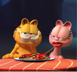

O filme Garfield: Fora de Casa (2024) traz uma nova e animada aventura do famoso gato laranja, dublado por Chris Pratt. A trama começa quando Garfield reencontra seu pai perdido, Vic, um gato de rua durão interpretado por Samuel L. Jackson. Ao lado de seu fiel amigo Odie, Garfield é levado a sair de sua vida confortável para se unir ao pai em uma arriscada e divertida aventura, que envolve um ousado assalto. Com uma combinação de humor e momentos emocionantes, o filme busca resgatar o espírito irreverente do personagem criado por Jim Davis
GARFIELD FORA DE CASA - 2024
Arlene

Na imagem, vemos uma cena do filme Garfield: Fora de Casa (2024) que destaca um momento romântico entre Garfield e Arlene, sua "namorada" nas tirinhas e adaptações animadas. Eles compartilham um prato de espaguete, que é uma referência clássica a cenas de encontros em filmes, como a famosa cena de jantar entre os cães em A Dama e o Vagabundo. Essa imagem transmite um dos temas do filme, que inclui tanto o humor característico de Garfield quanto momentos de leveza e carinho.